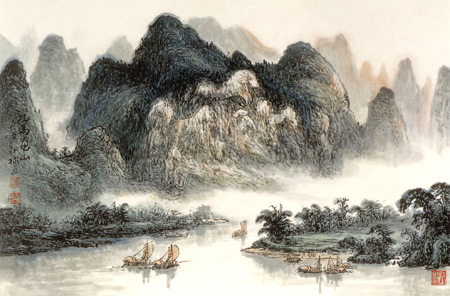
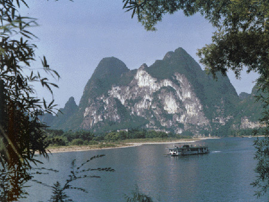

国画/九画马山
A. 半边奇渡：
在杨堤景区。可先乘车到达杨堤乡码头，然后乘船或者步行到各个名胜景点进行创作。半边渡在著名的官岩下游约二公里，此处有一山高耸，叫渡口山。山下有一条江边小路，被渡口山的悬崖深潭阻隔，行人须乘渡船才能继续前行。由于半边设渡，故叫半边渡。在半边渡的两边均有较好的位置进行拍摄，要是您站在渡口北望，只见数峰相连，高耸入云，很是上镜。
B. 浪石胜景：
在杨堤景区。可先乘车到达杨堤乡码头，沿江骑自行车或步行一公里，即到浪石村。此处风光别具一格，世所罕见。一路水穿峡谷，船靠山行，潭滩相连。两岸浓荫蔽日，翠竹扶风，倒影如镜。如当雨季，江面朦胧，山似剪影，丰姿卓约，从各个角度都可拍摄入画。
C.九马画山：
在兴坪景区。距兴坪镇西北约四公里，水路和陆路都可到达。九马画山雄峻伟岸，高耸入云，气势不凡。该山西面临漓江，石壁如削，壁上彩纹斑斓，远望如画屏，故名画山。细看山壁石纹勾画条条，纵横交错，依稀可辨出群马形象，神态各异，栩栩如生。九马画山被画家、摄影家视为经典景点，多出艺术佳品。拍摄九马画山的角度，在冷水滩一带为最佳。

摄影/九马画山
C. 黄布倩影：
在兴坪景区。从画山乘船或步行约几百米，就到了黄布滩。因江面宽长像一匹布，被黄色山壁倒影，好似一匹染过的黄布一样，故得名。此处江面黄绿相间，宽阔平静，牛群戏水嬉游，渔筏往来江中，极是迷人。黄布滩可拍早上日出，可拍下午的蓝天白云，可拍雨后天晴的云烟。黄布滩亦是经典拍摄点，摄影佳品很多。
D. 碧潭青螺：
在兴坪景区。位于兴坪码头下游约二公里，乘船可到；如过渡沿江边小路可更好地观赏这一带的景色。螺蛳山高大挺拔，间有山石如带，从山脚螺旋而上，直到山顶，故名螺蛳山。因为不管您从什么角度看，山体都像一只正在觅食的大海螺。山上的竹木草丛，如同螺蛳身上的青苔。每当朝阳铺撒山头时，它又像一个刚从深潭爬到岸边晒太阳的青螺，霞光闪闪，仿佛身上不断往下滴水。螺蛳山可以从船上以及岸上的多个角度拍摄，同时，这一带还有不少景点值得一拍，您可细细品味。
E. 碧莲倩影：
在县城景区。东临漓江，为阳朔县城内主峰，是阳朔的"标志"之一。距碧莲峰约八百米的阳朔大桥南桥头，是观赏和拍摄碧莲峰倒影的最佳角度。在此处观赏和拍摄碧莲峰，恰似一朵浴水而出、含苞欲放的莲花。当微风吹来，莲花徐徐展开，美不胜收。碧莲峰上尖下圆，山势挺拔，西北有崎岖小路攀援至顶。如在清晨到此，可拍摄著名的阳朔八景之一--东岭朝霞。
F. 书童山：
在县城景区。距县城东南约二公里，田家河与漓江会合处。骑自行车或步行至阳朔大桥下面一碎石路，行二百米到水文站，此处有一大草坪，可从多个角度拍摄书童山。书童山是漓江下游的一座不可多得的名山，孤峰耸立，拔地而起，因山腰有一块巨石恰似一个宽衣阔袖的古装男童正捧书诵读，人称"书童"，山亦以此得名。另外，从对岸或者游船上选准角度拍摄，也能得到较好的效果。
G. 矮山夕照：
在县城景区。骑自行车从县城石马大圆盘转入阳朔至普益公路，行约四公里，即到矮山村。从村中小路右转可到田家河边。此处碧水绿岸，水波不兴，群峰倒影，夕阳西下，景色怡人，是拍摄落日晚霞的好地方，与兴坪大河背、高田凤楼并称为三大夕照景点之一。
H. 东郎山：
在福利景区。距县城东部十公里，距福利镇二公里，在福利至兴坪公路旁，山下有人仔山村。从县城乘公交车或骑自行车可到。东郎山造型十分奇特，山从平地突兀拔起，高大峻峭，山顶生出一巨石，酷似人像，因位于县城东部，故名"东郎山"。东郎山可从多个角度观赏和拍摄：从东南面，可拍出一形似含情默默的少女；从正南面，可拍出一信步闲游的老人；从东北面，可拍出一戎装肃立的武士。同时，附近还有东山亭及田园风光可拍摄。
I. 青厄风光：
在高田景区。距县城南部约六公里，有二级公路直达。骑自行车可从白山根村左转到黄泥 村，沿河边一路游览拍照到工农桥。登桥凭栏远眺，田畴辽阔，阡陌纵横，翠竹夹岸，村舍若现若隐，金宝、遇龙两河交汇，悠然而来。此处景色诸多，可四处拍摄。工农桥下游的名景点"骆驼过江"，是拍朝霞的三佳地点之一；而上游的"青厄古渡"，则有拍晚霞的好角度；过桥到左边的采茶岭，一年四季可拍摄朝霞和日出。的确为摄影、绘画者的天堂。
J. 大榕树：
在高田景区。距县城约六公里，在古榕公园内，旁有穿岩和金宝河。大榕树高达十七米，枝繁叶茂，遮天蔽日，亭亭玉立，独树成林。大榕树虬枝横生，气根如游龙四出，盘根错节，蔚为壮观。旁边又有著名景点穿岩和金宝河互为映衬，可从多个角度拍摄，十分上镜。古榕已有一千四百多年的历史，与阳朔县建县时间相同，被成为"县树"，是摄影者必拍之景，并屡有佳品叠出。
K.月亮山：
在高田景区。从古榕公园沿公路南下约八百米，即到月亮山公园。月亮山一峰耸立，上接云霄，顶部石壁如屏，中空一洞，圆而明亮，如中秋之月，故名"月亮山"。月亮山公园门前有一环行赏月道，可步行观赏和拍摄月亮山形不断变化的过程。入园后有上山蹬道到达月岩，可以拍摄月岩洞的场面。
L.世外桃源：
在白沙景区。从阳朔县城乘公交车或骑自行车沿桂阳公路往北约十五公里即到。世外桃源是一处融自然山水风光与人文景观为一体的旅游胜地。此处山清水秀，民族风情浓郁，四季皆美，处处入画，是旅游、写作、绘画、摄影者的"世外桃源"。
M.遇龙桥：
在白沙景区。从阳朔县城乘公交车或骑自行车到白沙镇，左转入白沙至金宝公路，行约二公里，过遇龙村，即到遇龙桥。遇龙桥长六十米，宽五米，高九米，跨度十八米，是阳朔县境内最大的单拱石桥。其桥体藤蔓累垂，桥旁古树参天，桥下河水清澈透亮，顽童戏水，村妇荡衣，周围一派田园风光，群山远黛近绿，又与金龙桥、富里桥景致连成一片，风光旖旎，十分入画上镜，极为绘画、摄影者所喜爱。
N.其他景点：
以上介绍的几个景点的拍摄不过是沧海一粟罢了，其实阳朔的山山水水之间四季有景，处处是景，就看您如何发现。是的，阳朔山水从来不缺少美，而是需要更多的对美的发现。除了大量丰富的自然景观外，还有众多的人文景观可以进行写作、绘画和摄影创作。譬如，兴坪景区的渔村、熙平县遗址、兴坪古街民居等；福利景区的东山亭、大光亭等；县城景区的西街、江西会馆、鉴山楼及古城墙等；高田景区的鉴山寺、朗梓古民居等；白沙景区的旧县古民居、葡萄景区的古石城等，都可以找到创作的灵感，挖掘美的新意。因此，只要您留心在意，美总是存在的。